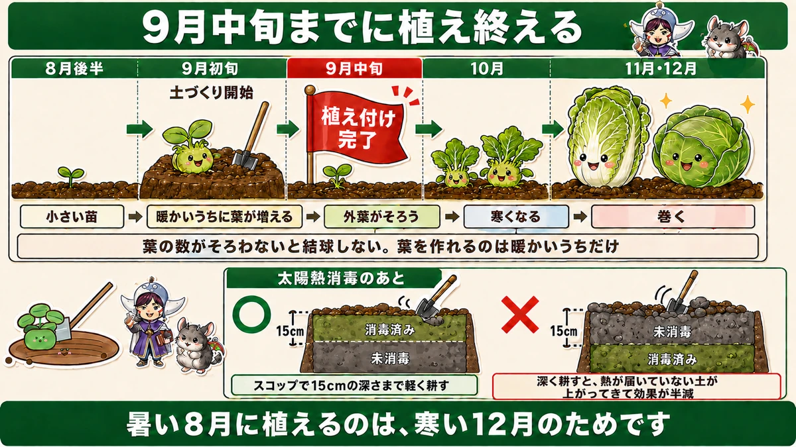
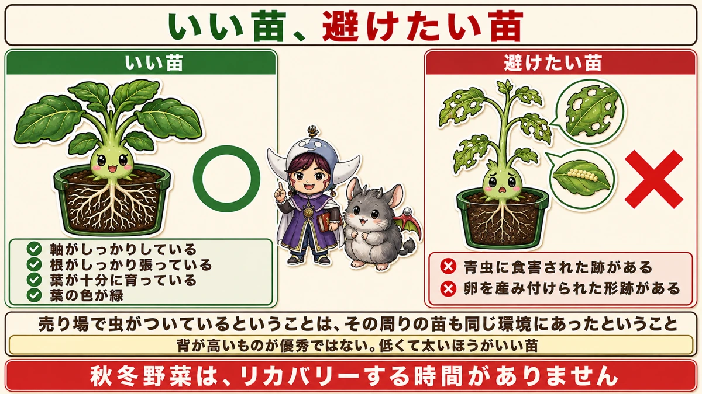
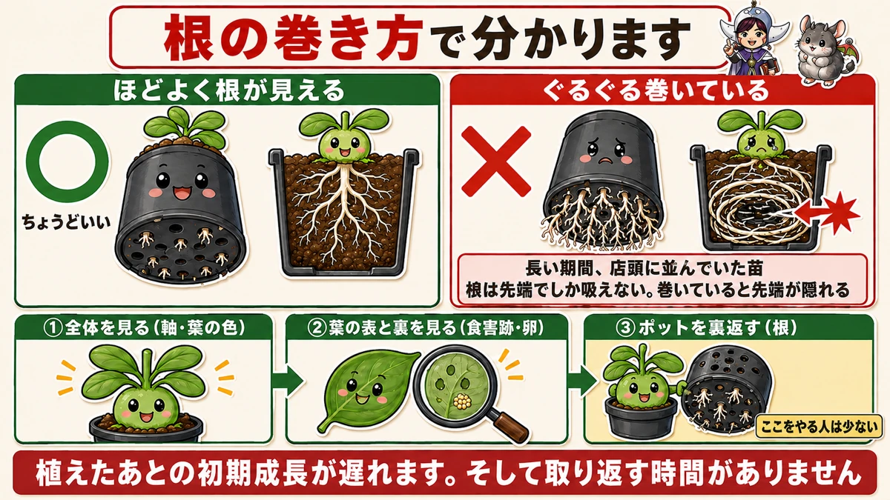
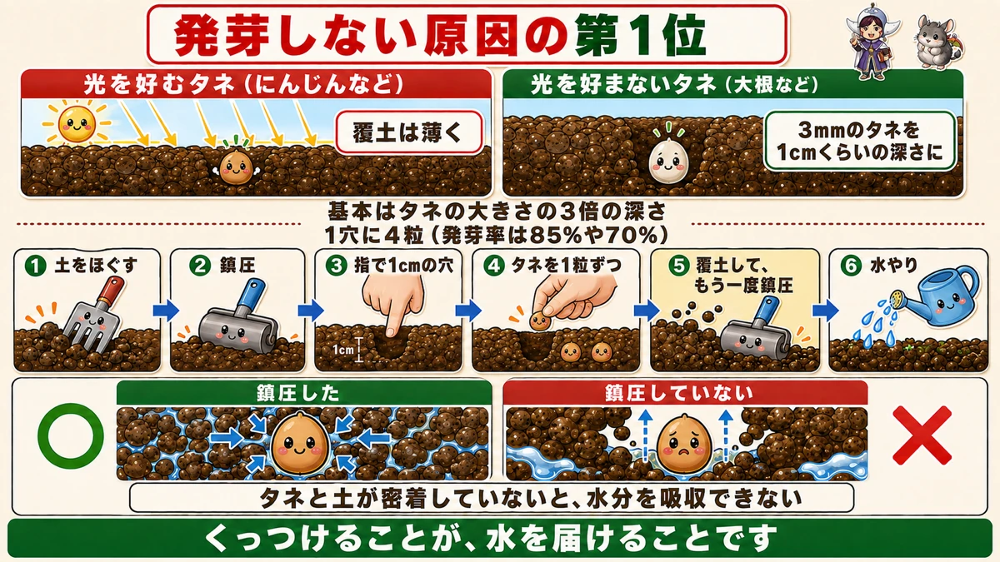

Turn the pot over 🌱 The way the roots have coiled tells you whether it's a good plant

🌱 "All the plants look identical to me."
🌱 "I sowed seed and nothing came up."
🌱 "When should I actually start the winter crops?"
Hello, I'm Eiko. Eight years of growing vegetables organically and without pesticides, and a teaching licence in science.
The most useful sentence in this article, up front:
When you buy a plant, turn the pot over.
The way the roots have coiled tells you whether it's a good one ☺️
Autumn and winter crops have no slack in them
Winter brassicas run on a tighter schedule than anything you grow in summer. Working backwards from your first frost:
- About 12 weeks before the first frost — start the soil
- About 10 weeks before the first frost — planting finished
- From around the first frosts onward — harvest

What this diagram says （図解の文字）
- Finish planting by mid-September （≒ about 10 weeks before the first frost）
- Late August → start the soil ／ early September → planting ／ mid-September → done
- Small plant → leaves increase while it's still warm → the outer leaves are complete → it turns cold → it hearts up
- Without enough leaves it will never heart. And leaves can only be made while it's warm
- After solarising the soil — ○ fork over to 15 cm only ／ × dig deeper and un-sterilised soil comes up to the surface, halving the effect
- Planting in the heat of August is for the cold of December
Why the deadline is real
A cabbage, a Chinese cabbage, any heading crop: it will not form a head until it has made enough outer leaves. The head is built out of them.
And leaves can only be made while it's warm. Plant too late and the cold arrives before the plant has the raw material. It then sits there all winter as a rosette of leaves and never hearts.
That's the whole reason for the deadline. Planting in August heat is work done for December.
The plant you buy decides most of the outcome
With summer crops a slightly weak plant is recoverable — there are three or four months ahead and it can catch up.
Winter crops are different:
- the window to get them planted is short
- the warm spell after planting is short
- so there is no time to recover
If you're new to it, a bad plant is very hard to rescue. Choosing well is cheaper than fixing.

What this diagram says （図解の文字）
- Good plants, plants to avoid
- ○ Good — firm stem ／ roots well established ／ leaves well grown ／ leaf colour green
- × Avoid — signs of caterpillar damage ／ signs of eggs laid on it
- Insects on the display means every plant around it shared that environment
- Tall is not better. Short and thick is the better plant
- Winter crops leave you no time to recover
What to put back on the shelf
1. Holes or chewed edges on the leaves. Something was already feeding on it.
2. Small beads lined up on the underside of a leaf. Those are eggs, and you would be carrying them home and planting them.
Worth noticing: if one plant on the display has insects, all the plants around it have been living in the same conditions. I'd walk away from the whole batch rather than pick carefully through it.
What to look for instead
- A firm stem
- Roots well established
- Leaves properly grown
- Green leaf colour
And the counter-intuitive one, which is the same whether you raised the plant or bought it: tall is not better. Short and thick is the better plant. Height usually means it was reaching for light.
Now turn the pot over
This is the check almost nobody does.
Look at the base of the pot and see what the roots are doing. They show through the drainage holes.

What this diagram says （図解の文字）
- The way the roots have coiled tells you
- ○ roots just visible — about right
- × coiled round and round — a plant that sat on the shelf a long time
- A root only absorbs at its tip. Coiled, the tips are hidden inside
- ① Look at the whole plant (stem, leaf colour) ② look at both sides of the leaves (damage, eggs) ③ turn the pot over (roots) — few people do this one
- Early growth is delayed. And there's no time to make it up
Roots just showing → a good plant.
Roots coiled round and round, the pot solid with them → leave it.
What coiled roots are telling you
They mean the plant has been standing on that shelf for weeks. It was potted on, didn't sell, and the roots went round and round because there was nowhere left to go.
The consequence is specific: a root only takes up water and nutrients at its tip. When the roots have coiled, the tips are buried in the middle of the root ball, facing inward, against the plastic.
So early growth after planting is slow — and with a winter crop, that lost fortnight is a fortnight you don't have.
The order to check in
- The whole plant — is the stem thick, is the leaf colour green?
- Both sides of the leaves — damage, eggs
- The base of the pot — the roots
Most people do 1 and 2. Do number 3 and you'll pick better plants than most of the people in the queue.
Sowing direct
Plenty of winter crops aren't bought as plants at all — radishes, mooli, turnips, spinach, mustard greens. They go straight into the ground.

What this diagram says （図解の文字）
- The number one reason seed doesn't come up
- Seed that wants light (carrots and such) → cover thinly
- Seed that doesn't want light (mooli and such) → a 3 mm seed about 1 cm deep
- The rule of thumb is three times the seed's own size
- Four seeds per station (germination is 85% or 70%)
- 1 loosen the soil ／ 2 firm it ／ 3 a 1 cm hole with a finger ／ 4 drop the seeds in one at a time ／ 5 cover, then firm again ／ 6 water
- ○ firmed ／ × not firmed — if seed and soil aren't in contact, the seed can't take up water
- Making contact is how you deliver the water
Four seeds per station
Look at the back of the packet: germination is quoted as 85%, or 70%. Not 100%. Sow ten and two or three won't appear.
So one seed per station is optimistic. Four is about right — something will come up, and you thin to the strongest.
Light-lovers and light-avoiders
The usual rule is cover to about three times the seed's own diameter. But that isn't the whole story.
Some seed needs light to germinate, and some doesn't.
- Needs light → cover thinly, or it won't germinate at all
- Doesn't need light → cover a little deeper
Concretely: mooli (daikon) doesn't want light, so a 3 mm seed goes about 1 cm down. Carrot is the opposite — it wants light, so the covering is barely there.
Two root vegetables, opposite instructions. Which is exactly why the packet is worth reading.
The real reason seed doesn't come up
The full sequence is six steps:
- Loosen the soil thoroughly
- Firm it down
- Make a 1 cm hole with a finger
- Drop the seeds in one at a time (four per station)
- Cover, and firm again with your palm
- Water
Notice that firming appears twice
Once before sowing, once after covering.
Almost everyone skips the second one.
And that's the number one cause of failure
It's stated plainly in the growing literature: the single biggest reason seed fails to germinate is insufficient firming.
The mechanism is simple. If the seed and the soil aren't touching, the seed cannot draw water out of the soil.
Soil tipped loosely over a seed leaves a layer of air around it, and water doesn't travel across air. You water, and none of it reaches the seed. That is what "I sowed it and nothing happened" usually is.
To sum up
- ✅ Soil about 12 weeks before the first frost, planting done by about 10 weeks before
- ✅ Heading crops won't heart without enough outer leaves — and leaves are only made while it's warm
- ✅ After solarising, fork to 15 cm only
- ✅ Winter crops give you no recovery time, so the plant you buy decides most of it
- ✅ Reject: chewed leaves, eggs on the underside
- ✅ Choose: firm stem, good roots, full green leaves. Short and thick beats tall
- ✅ Turn the pot over. Roots just visible is good; tightly coiled means weeks on the shelf
- ✅ A root absorbs only at the tip — coiled roots hide the tips and slow early growth
- ✅ Check in this order: whole plant → both sides of the leaves → base of the pot
- ✅ Four seeds per station; germination is 85% or 70%, not 100%
- ✅ Cover to three times the seed's size — but check whether it wants light
- ✅ Firm twice: before sowing and after covering
- ✅ No contact, no water. Contact is how the water arrives
You don't have to do all of it. Next time you're at a garden centre, pick up one pot and turn it over. Just look at what the roots are doing 🌱
Thank you for reading!